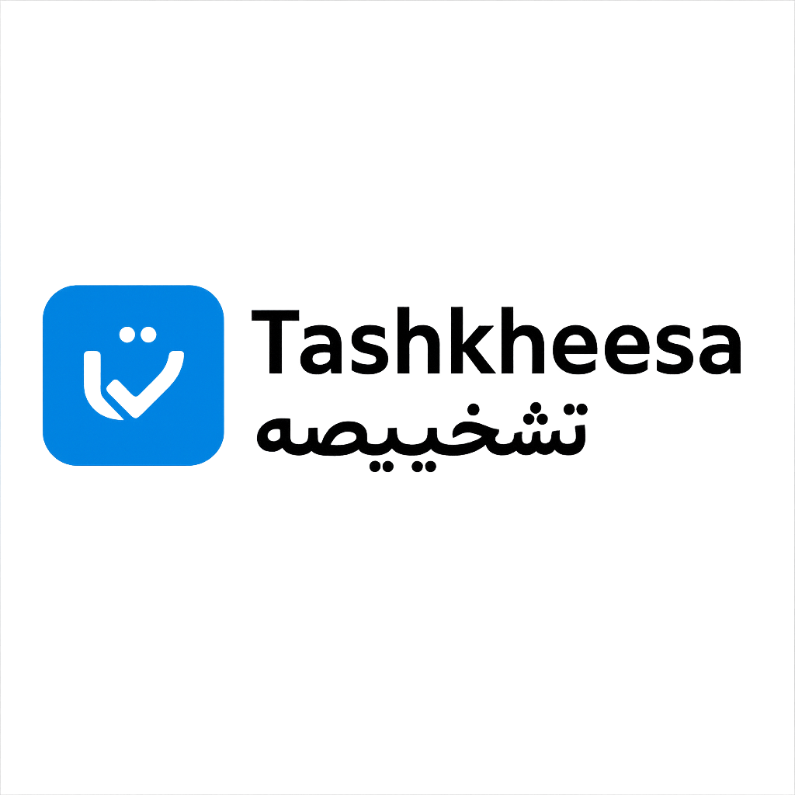

CONSULTANT-LEVEL SPECIALISTS • TASHKHEESA NETWORK
Tashkheesa connects you with consultant-level doctors who actively practice in hospital settings. Every report is prepared and signed off by a named specialist – not an anonymous freelancer.
These profiles are a sample of the doctors you may be matched with. Your case is always routed to a specialist with the right sub-specialty and experience for your question.
Every report goes through a clear process so you know exactly what you’re getting – and who is responsible for it.